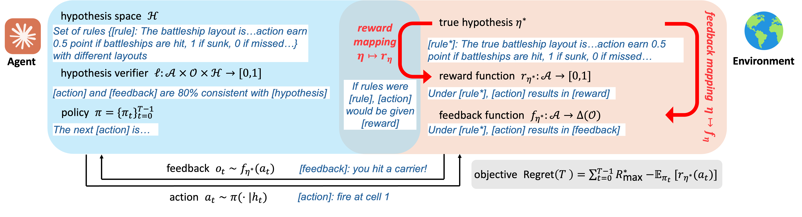
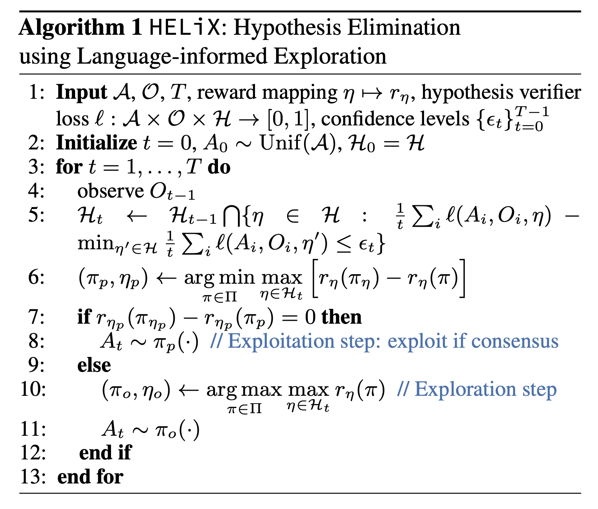
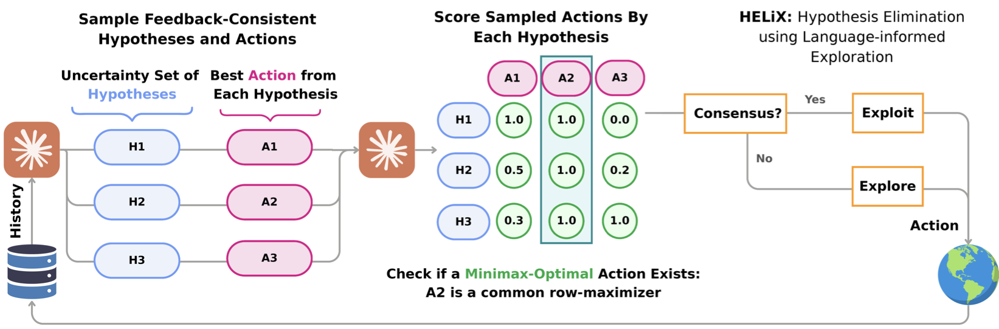
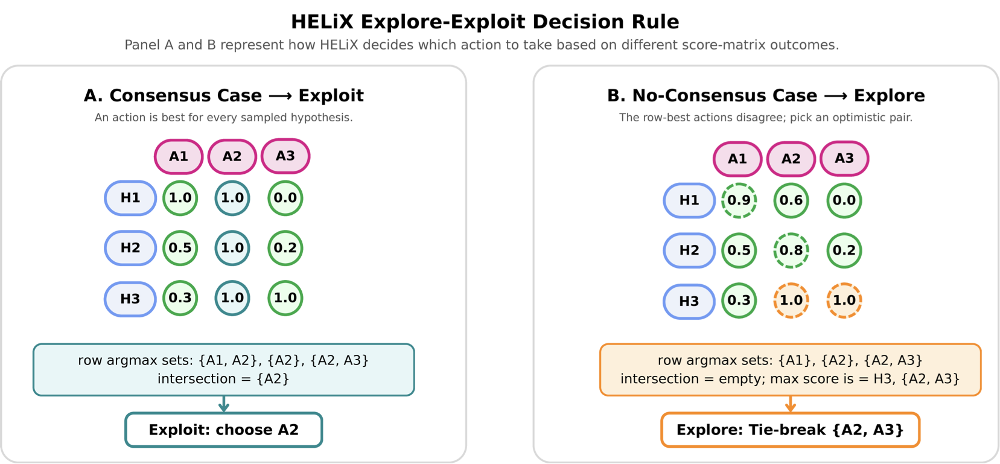
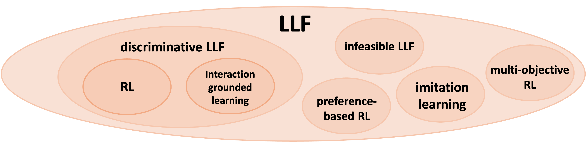

Humans learn from language. We read a textbook to learn calculus. We follow a professor's explanations in lecture. We get an exam score at the very end, if it arrives at all. RL algorithms learn from numerical rewards: a binary true or false (RLVR), a continuous score (PPO, GRPO), or a preference ranking (DPO). But an LLM agent that continuously learns from the world will mostly receive signals like the professor's explanation or in a conversation with a programmer: a critique, a correction, or a suggestion. None of these can be easily verified as true or false, or rated on a scale. We ask the question: is there an RL algorithm that can directly learn from this type of natural language feedback? We give this setting a precise mathematical grounding.
01Why language feedback is different
Consider a coin that talks. The coin has an unknown head-probability $\eta \in [0, 1]$. Each round you guess heads or tails, and the reward is $1$ if you guessed the toss. Say you guess heads and the coin lands tails. If the coin only says "miss," you don't learn much about the coin's head probability. But let the coin speak a full sentence: "miss, your guess was too optimistic; the coin seems tail-heavy." That single sentence cuts the hypothesis space in half: every $\eta > 0.5$ is gone. Even better, this tells you what to do next: guess tails. One toss with binary feedback teaches you almost nothing; one toss with a sentence hands you the optimal action.
When researchers incorporate language feedback into learning algorithms, they have historically relied on two straightforward strategies. The first: translate the feedback into a reward number, then run ordinary RL on the reward. Compressing a sentence into a scalar can only lose information. Learning under a proxy reward opens up a can of worms on generalizability and misspecification. The second strategy is smarter (Andreas et al., 2017): keep the numerical reward as the primary signal, and treat language as extra information on the side. That helps, but it still requires an explicit numerical reward to be observed by the learning algorithm.
In our setup, the agent repeatedly picks an action, and the environment responds with a sentence. A reward exists: it is what we measure the agent's performance on, but the agent never sees it. Everything the agent will ever know about its performance on the task comes from language.
However, this setup is very different from learning from numerical reward. Language feedback might not directly map to a reward number, but if it doesn't contain information about the optimal action, learning cannot happen. Someone recently distilled a model on summarized reasoning traces and got a model that only responds with "Egypt won" to every question. Now imagine an environment that only has feedback "Egypt won," regardless of what action a policy takes. No algorithm can learn here, no matter how clever.
So the hardness of learning from language is set by how much the feedback reveals about the reward: the talking coin and the "Egypt won" environment are the two ends of a spectrum. The next section builds the measure where a problem sits on that spectrum.
02The framework: hypotheses, verifiers, and a new dimension
To make "learning with natural language feedback" rigorous, we extend the interactive learning setup to incorporate natural language. We treat this as an exercise of: what is the minimal change we can make to the framework to make it work with language? The answer is a hypothesis verifier.

1 · The hypothesis
Instead of a parameter vector $\theta^*$, the environment is described by a hypothesis $\eta \in \mathcal{H}$ — a piece of text rich enough to pin down both how rewards and how feedback are generated. A hypothesis might be a user's taste profile, a game's rules plus its hidden board, or code. The reward mapping $\eta \mapsto r_\eta$ is assumed known (an LLM-as-judge can score an action given the rules); the true hypothesis $\eta^*$ is unknown. This mirrors a linear bandit's known feature map and unknown parameter — but in language.
2 · The hypothesis verifier
How does the agent extract information from a sentence? Through a hypothesis verifier, a loss $\ell(a, o, \eta) \in [0,1]$ that asks: is hypothesis $\eta$ consistent with feedback $o$ on action $a$? Crucially this is not a reward model and not a correctness oracle. It never certifies that $\eta$ is true — it only flags when $\eta$ has been contradicted by what was observed. Consistent implies $\ell = 0$; incompatible implies a positive penalty. Feedback is assumed unbiased: the true hypothesis is always among the loss-minimizers.
3 · The transfer eluder dimension
We build on the eluder dimension of Russo & Van Roy (2013)2 — a way to measure how many times a reward function can still surprise an optimistic learner before its value everywhere is pinned down. That number controls how fast classic reward-based exploration converges. The transfer eluder dimension $\dim_{TE}$ measures something subtler: not how many surprises remain in reward space, but how effectively consistency-on-feedback transfers into certainty about reward. An action is transfer-independent of past actions if two hypotheses can agree on all the feedback seen so far yet still disagree sharply about its reward.
The same task, four difficulties
We can now describe the complexity of a learning problem with language feedback in terms of the transfer eluder dimension. $\dim_{TE}$ changes when the feedback is more or less informative. Consider constructing a hidden $L$-step solution, where each step comes from a set $\mathcal{S}$ and the reward is $1$ only when every step is correct:
| Feedback type | What it tells you | Learning complexity $\dim_{TE}$ |
|---|---|---|
| Reward | whether all steps are correct1-bit binary reward | $O(|\mathcal{S}|^{L})$ |
| Explanation | index of the first wrong step | $O(|\mathcal{S}|\,L)$ |
| Suggestion | correction for the first mistakeonline teacher correction | $O(L)$ |
| Demonstration | all the correct stepsonline teacher demonstration | $O(1)$ |
The same task ranges from exponential to constant sample complexity, and the only thing that changed is what the feedback says. Reward-only learning must enumerate all combinations of the steps. Feedback that locates the first error allows a policy to focus on trying to get one step correct at a time. A correction removes the dependence on $|\mathcal{S}|$. A demonstration ends the game in one round.
03HELiX: an algorithm for learning from language feedback
HELiX — Hypothesis Elimination using Language-informed eXploration — is a UCB-style algorithm that follows the optimism in the face of uncertainty principle, but over a space of text hypotheses. Given a hypothesis $\eta\in\mathcal{H}$, let $\pi_\eta$ denote its optimal policy, and (with a slight abuse of notation) let $r_\eta(\pi) := \sum_{a\in\mathcal{A}} r_\eta(a)\,\pi(a)$ denote the expected reward of policy $\pi$ under $\eta$.

At step $t$, the algorithm maintains a confidence set $\mathcal{H}_t$ of hypotheses that remain approximately consistent with observed actions and feedback: it keeps every $\eta$ whose average hypothesis-verifier loss $\frac{1}{t}\sum_i \ell(A_i, O_i, \eta)$ is within $\epsilon_t$ of the best achievable in $\mathcal{H}$ (line 5). It then makes one of two moves:
- Exploit on consensus (lines 6–8). HELiX computes a minimax policy $\pi_p \in \argmin_{\pi\in\Pi} \max_{\eta\in\mathcal{H}_t} \big[r_\eta(\pi_\eta) - r_\eta(\pi)\big]$. If the minimax regret is zero, $$\min_{\pi\in\Pi} \max_{\eta\in\mathcal{H}_t} \big[r_\eta(\pi_\eta) - r_\eta(\pi)\big] = 0,$$ then the minimizer $\pi_p$ only selects actions that are simultaneously optimal for every hypothesis in the confidence set — disagreement about the world doesn't matter if everyone agrees on what to do — and HELiX plays $A_t \sim \pi_p(\cdot)$.
- Explore optimistically otherwise (lines 9–11). If no consensus action exists, HELiX identifies the hypothesis $\eta_o$ achieving maximal optimistic reward and follows its optimal policy, $(\pi_o, \eta_o) \in \argmax_{\pi \in \Pi} \max_{\eta \in \mathcal{H}_t} r_\eta(\pi)$, gathering feedback that prunes $\mathcal{H}_t$ further.
The consensus check acts as a stopping criterion: once the candidates agree on the best action, HELiX stops exploring even if it is still uncertain about the exact rewards. This matters for non-discriminative problems — feedback in a trivial LLF problem can directly reveal the optimal action but nothing about the reward, and the stopping criterion ensures the algorithm will not over-explore after identifying an optimal action.
A useful point of contrast: directly querying an LLM for an action by prompting with the interaction history — chain-of-thought (CoT) reasoning with history — is similar to drawing actions from $\pi_\eta$ where $\eta$ is randomly sampled from $\argmin_{\eta'\in\mathcal{H}} \sum_i \ell(A_i, O_i, \eta')$. Such a greedy algorithm does not necessarily explore, and in RL it does not always have low regret; since RL is a special case of discriminative LLF, we conjecture the same holds for general LLF.
04Play the algorithm
HELiX is evaluated on language-feedback games where the agent never sees a reward: only words and a partially-revealed map. Before watching the algorithm, play a round yourself — fire at least three or four shots and notice what each reply does to your thinking. A miss quietly shrinks where ships can hide. A hit changes everything: suddenly you're weighing theories — which way does the ship run? how long is it? — and choosing a shot to test them. That little cycle of forming, testing, and discarding hypotheses is exactly what HELiX formalizes. Once you land a hit, the guide under the board will point you to the algorithm.
05Build a score matrix, step by step
This is the heart of HELiX. The board below is the same Battleship board you played above — fire a shot on either one and both update. Walk through the algorithm one stage at a time and watch the score matrix get built and read. The "LLM" here is a transparent heuristic so you can see exactly why each score lands where it does — but the mechanism (sample → score → consensus check → explore/exploit → tie-break) is exactly the paper's. How a real LLM fills each of these roles is spelled out in §06.
06Implementing HELiX with large language models
The theoretical algorithm searches over an exponential hypothesis space — impossible in practice. The key practical contribution is approximating it with three LLM calls per step, yielding an inference-time strategy that is a principled alternative to a single chain-of-thought (CoT):
- Sample hypotheses + actions. Prompt the LLM for $N$ diverse "thinking traces" (hypotheses) consistent with the history, each with its best action. The LLM implicitly acts as the verifier, filtering inconsistent hypotheses.
- Build the score matrix. Use an LLM reward-mapping $R_{\text{LLM}}(\eta, a)$ to score every candidate action under every hypothesis, forming a matrix $S_t$.
- Decide. Read the explore/exploit decision off $S_t$ via row-wise argmaxes.
Why structure exploration this way rather than trust the model to explore on its own? Because whether LLMs can balance exploration and exploitation in context is far from settled — studies that probe them on bandit-style decision problems find the ability uneven and often in need of explicit scaffolding. HELiX supplies that scaffolding as an external rule inspired by a provable algorithm instead of hoping it emerges from a single CoT.

The decision rule, precisely
The explore/exploit choice is a small piece of linear algebra on $S_t$. For each hypothesis (row), take the set of highest-scoring actions. Then:
- Consensus (Exploit): if the intersection of these row-argmax sets is non-empty, that shared action is chosen — it is optimal for everyone.
- No consensus (Explore): if the intersection is empty, eliminate all but the highest-scoring hypotheses, then pick the action with the globally highest score.
- Tie-breaking via re-scoring: ties are broken by subtracting each action's average score under a random reference policy $\pi_{\text{ref}}$ — an advantage that cancels an LLM's per-hypothesis scoring quirks and favors discriminative hypotheses over permissive ones (e.g. "fire along the edge" beats "fire anywhere"). Remaining ties prefer actions generated earlier.

07Does it work?
Across Battleship and Minesweeper, HELiX consistently beats a chain-of-thought baseline and its own ablation without the consensus exploitation step. The gap is largest exactly where information-gathering matters most — Minesweeper — confirming that strategic exploration, not raw LLM cleverness, is doing the work. All runs use Claude 3.5 Sonnet (v2).
A note of honesty from the authors: HELiX assumes the LLM can pick a good action under a given hypothesis and can score actions fairly across hypotheses. These assumptions don't hold for every model or task. The contribution is less "a finished agent" than a specification of the properties an LLM must have to be a principled language-feedback learner — and a guarantee that, if it has them, learning is efficient.
08Takeaways
- Language feedback is a first-class signal, not a disguised reward. The transfer eluder dimension quantifies how much it helps.
- Informative feedback is never worse than reward, and can be exponentially better — formalized via $\dim_{TE} \le \dim_E$.
- HELiX makes this constructive: sample hypotheses, cross-score them against actions, exploit on consensus and explore on optimism — with a sublinear regret bound.
- It runs on today's LLMs as an inference-time alternative to chain-of-thought, and it wins on language-feedback games.

09References & further reading
- C.-A. Cheng, A. Kolobov, D. Misra, A. Nie, and A. Swaminathan. LLF-Bench: Benchmark for Interactive Learning from Language Feedback. arXiv:2312.06853, 2023. Introduces the LLF paradigm and benchmark this work formalizes — agents that learn interactively from natural-language feedback in place of rewards.
- D. Russo and B. Van Roy. Eluder Dimension and the Sample Complexity of Optimistic Exploration. Advances in Neural Information Processing Systems (NeurIPS), 2013. Introduces the eluder dimension, the reward-space complexity measure that the transfer eluder dimension generalizes.